1. 기본적으로 언어깨짐을 방지하기 위해 WEB-INF/web.xml에 언어인코딩필터를 넣어준다.
Enconding Filter txtfile
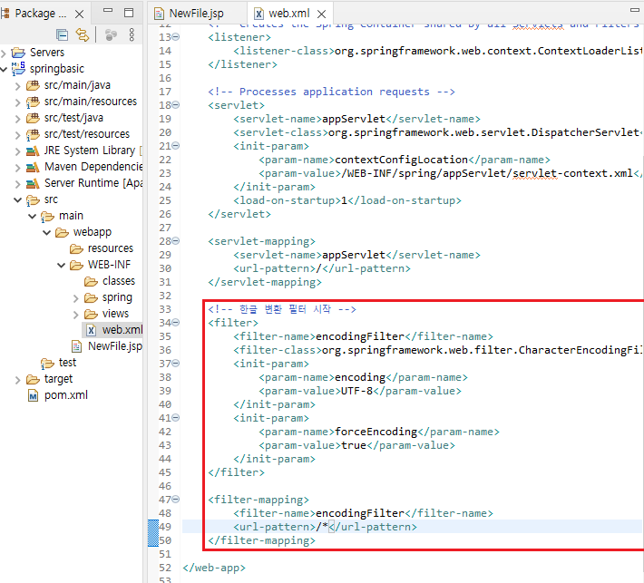
2. pom.xml을 이용해서 설치된 maven들의 버전들을 임의로 변경가능하다
여기서 자바 버전을 Properties에서 바꾼 11버전으로 바꾸어주고
스프링프레임워크도 상위버전인 5.0.7.RELEASE로 올려준다
아래쪽에 Maven plugin도 같이 삽입해주자
<maven-jar-plugin.version>3.1.1</maven-jar-plugin.version>
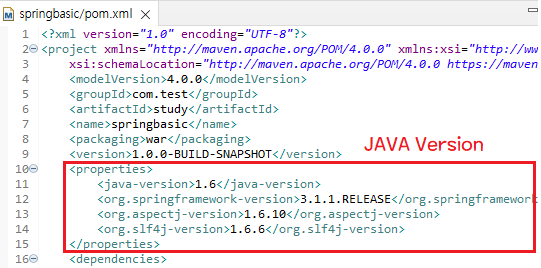
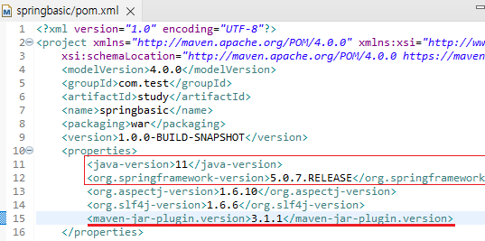
3. plugin을 검색하여 maven-compiler-plugin에 대한 설정을 바꾸어준다
버전도 상위버전인 3.5.1로 변경해주고 소스와 타겟의
자바 버전도 상위에서 설정한 버전이랑 똑같이 맞추기 위해 ${java-version}을 넣어준다
또한 글자깨짐 방지를 위해
<encoding>UTF-8</encoding>
도 넣어준다
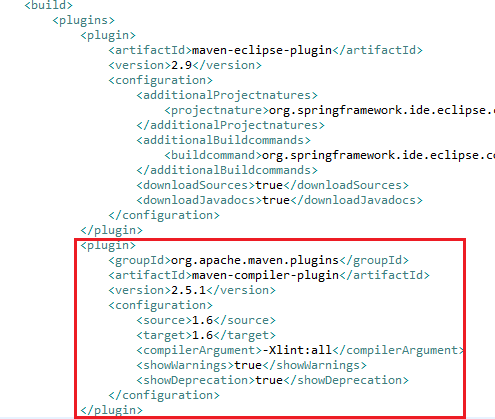
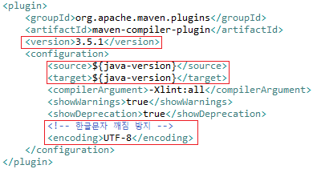
4. 설정이 완료되면 프로젝트를 우클릭하여 maven-Update Project를 해준다
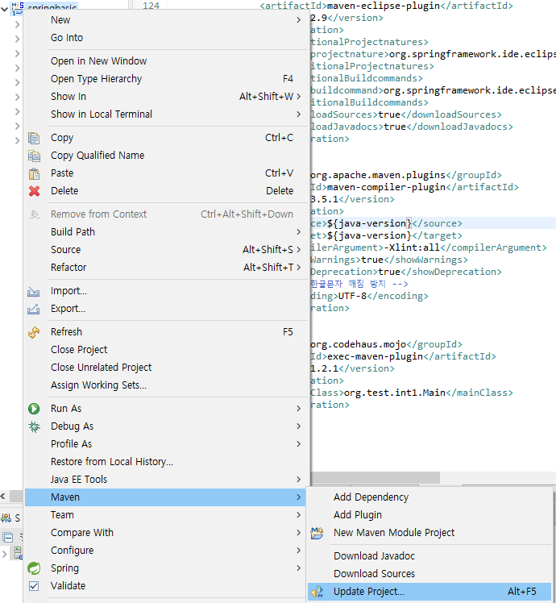
5. 언어깨짐 방지를 위해 Window-Preference로 들어가서
General-workspace의 텍스트 인코딩을 UTF-8로 바꾸어준다
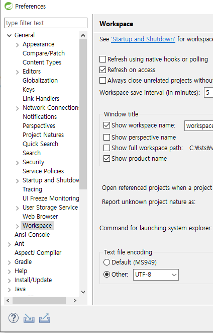
6. 프로젝트를 다시 우클릭하여 Run as - Maven Clean / Maven Build 순서로 구동해준다
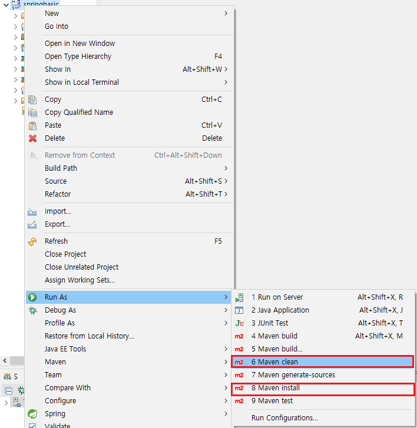
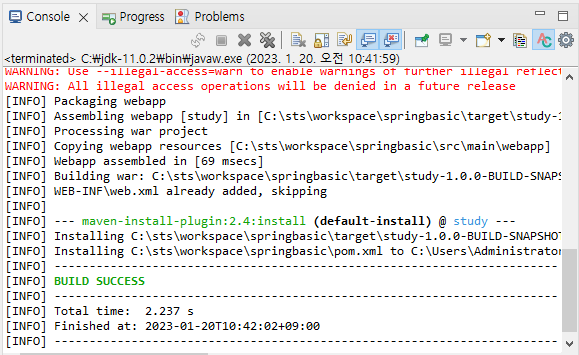
7. DTO를 간소화 시키기 위해 lombok.jar을 설치하기 위해 아래 링크에서 maven을 복사한다
lombok
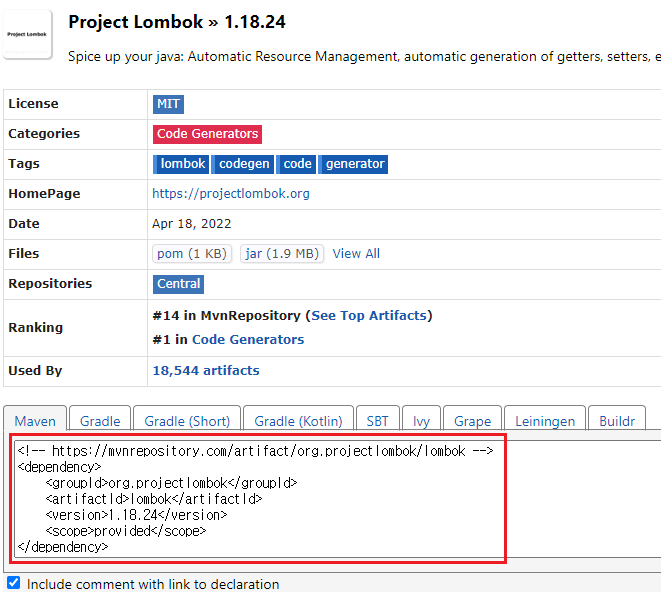
8. 이제 Spring에선 jar파일을 직접 설치할 필요 없이 maven만 pom.xml에 추가하면 된다
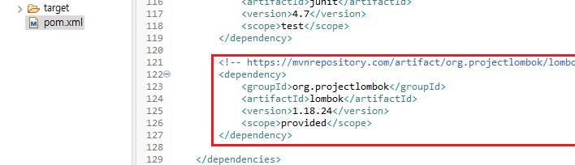
9. jar이 제대로 설치되었다면 Maven Dependencies에서 lombok를 Java Run as로 실행시키자
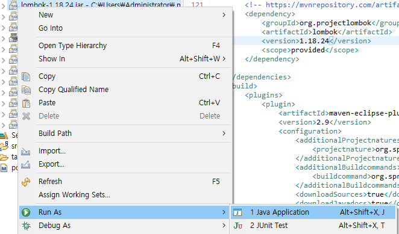
10. lombok 설치창이 뜨면 현재 설치된 STS.exe 경로인것만 체크 후 Install
만약 경로가 제대로 잡히지 않는다면 Specify location을 눌러 직접 찾아준다
설치는 금방 완료되므로 설치가 완료되면 Quit Installer로 끝내기
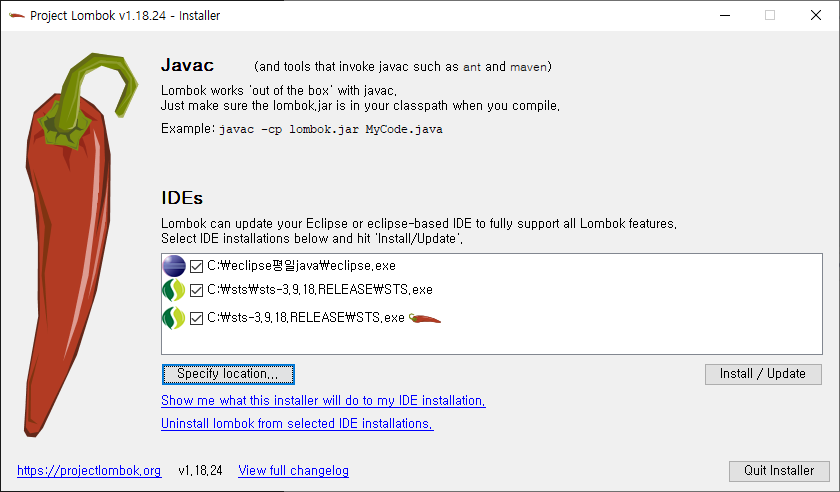
11. 임의의 DTO를 만들어 Annotation을 넣고 잘 동작하는지 확인해보자
12. @Builder의 사용 예시를 확인하기 위해 java/test에 임의의 클래스를 만들어 테스트해보자